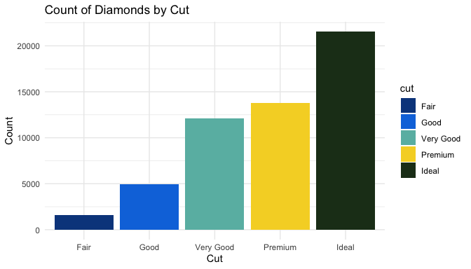
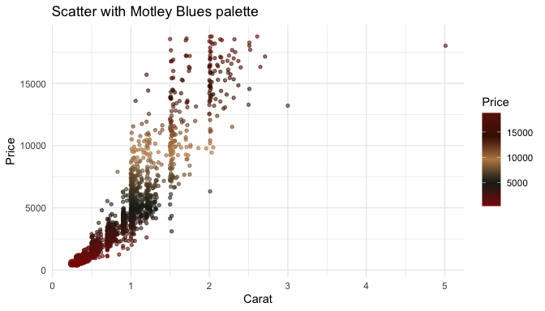
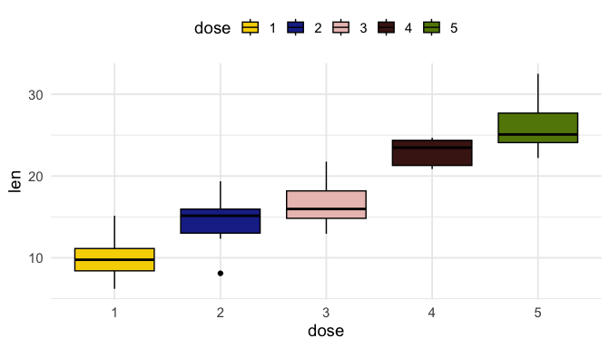
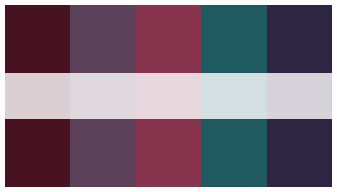
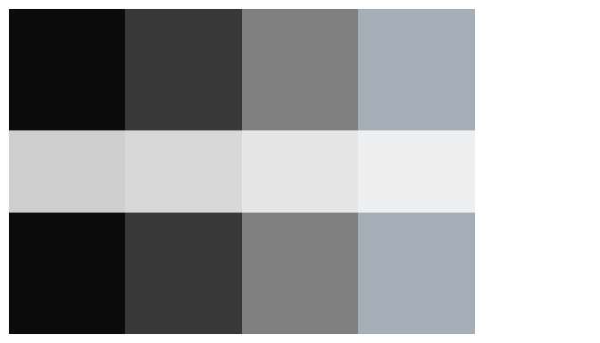
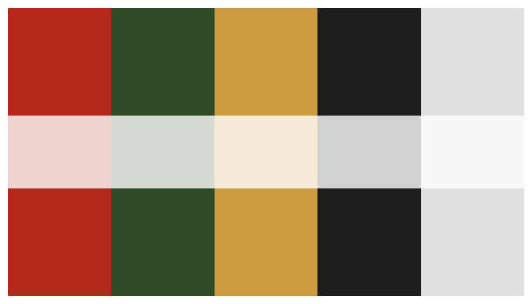

The goal of harlem is to provide a collection of color palettes inspired by iconic works from Harlem Renaissance artists. These palettes are designed to bring artistic flair to your data visualizations in R.
Each palette draws from the colors of a specific artwork:
-
Jacob Lawrence – Street Scene (
LawrenceStreetScene)
-
Romare Bearden – Conjur Woman (
BeardenConjurWoman), Collage (BeardenCollageif included)
-
Aaron Douglas – Aspects of Negro Life (
DouglasAspects), Song of the Towers (DouglasSongTowers)
-
Archibald Motley – Blues (
MotleyBlues), Nightlife (MotleyNightlife)
-
William H. Johnson – Harlem (
JohnsonHarlem), Going to Church (JohnsonGoingChurch), Ascent of Ethiopia (JonesAscentEthiopia)
-
Loïs Mailou Jones – La Baker (
JonesLaBaker), Ascent of Ethiopia (JonesAscentEthiopia)
-
Sargent Claude Johnson – Octoroon Girl (
SargentOctoroonGirl)
-
Beauford Delaney – Self-Portrait (
DelaneySelfPortrait)
-
Palmer Hayden – Fetiche et Fleurs (
HaydenFetiche)
-
Charles White – Soldier (
CharlesWhiteSoldier)
-
Hale Woodruff – The Amistad Mutiny (
WoodruffAmistad)
By using these palettes, you can incorporate the vibrancy, contrast, and cultural context of Harlem Renaissance art directly into your ggplot2 charts or other R visualizations.
Installation
You can install the development version of harlem from GitHub Wwith:
# install.packages("devtools")
devtools::install_github("sdhutchins/harlem")Examples
Below are sample visualizations with a few of these palettes.
Example 1: Bar Plot Using the JonesAscentEthiopia Palette
library(harlem)
library(ggplot2)
data(diamonds, package = "ggplot2")
palette <- harlem_palettes$JonesAscentEthiopia
ggplot(diamonds, aes(x = cut, fill = cut)) +
geom_bar() +
scale_fill_manual(values = palette) +
theme_minimal() +
labs(title = "Count of Diamonds by Cut",
x = "Cut", y = "Count")
Example 2: Scatter Plot Using the MotleyBlues Palette
# Build a continuous gradient from a palette
continuous_cols <- harlem_palette("MotleyBlues", n = 256, type = "continuous")
# Use a scatter plot to demonstrate continuous color scale
set.seed(1)
subset_diamonds <- diamonds[sample.int(nrow(diamonds), 2000), ]
ggplot(subset_diamonds, aes(x = carat, y = price, color = price)) +
geom_point(alpha = 0.6, size = 1.2) +
scale_color_gradientn(colors = continuous_cols) +
theme_minimal() +
labs(title = "Scatter with Motley Blues palette",
x = "Carat", y = "Price", color = "Price")
Example 3: Box Plot Using the CharlesWhiteSoldier Palette
set.seed(123)
df <- data.frame(
dose = factor(rep(1:5, each = 10)),
len = c(rnorm(10, 10, 3),
rnorm(10, 14, 3),
rnorm(10, 18, 3),
rnorm(10, 22, 3),
rnorm(10, 26, 3))
)
# Box plot
p3 <- ggplot(df, aes(x = dose, y = len, fill = dose)) +
geom_boxplot(color = "black") +
scale_fill_manual(values = harlem_palettes$JohnsonGoingChurch) +
theme_minimal(base_size = 14) +
theme(legend.position = "top") +
labs(x = "dose", y = "len")
p3
List of Available Palettes
You can view the list of available palettes with:
names(harlem_palettes)
#> [1] "LawrenceStreetScene" "BeardenConjurWoman" "DouglasAspects"
#> [4] "MotleyBlues" "JohnsonHarlem" "SargentOctoroonGirl"
#> [7] "DelaneySelfPortrait" "JonesLaBaker" "HaydenFetiche"
#> [10] "MotleyNightlife" "JonesAscentEthiopia" "CharlesWhiteSoldier"
#> [13] "DouglasSongTowers" "JohnsonGoingChurch" "LoisMailouJones"
#> [16] "WoodruffAmistad"Preview Palettes
# Preview a few palettes
print_palette(harlem_palettes$MotleyNightlife)
print_palette(harlem_palettes$DouglasAspects)
print_palette(harlem_palettes$LawrenceStreetScene)
Usage
The package provides two main functions:
-
harlem_palettes: A list containing all available palettes -
harlem_palette(): A function to generate palettes with options for discrete or continuous output -
print_palette(): A function to visualize palettes
# Get a specific palette
harlem_palettes$MotleyBlues
#> [1] "#8F1307" "#1F231C" "#BD8955" "#461303" "#6D1A08"
# Generate a continuous palette
harlem_palette("MotleyBlues", n = 10, type = "continuous")
#> [1] "#8F1307" "#5D1A10" "#2B2119" "#53452E" "#997248" "#A26E42" "#6D3A1E"
#> [8] "#4A1303" "#5B1605" "#6D1A08"
#> attr(,"class")
#> [1] "palette"
#> attr(,"name")
#> [1] "MotleyBlues"
# Print a palette
print_palette(harlem_palettes$LawrenceStreetScene)